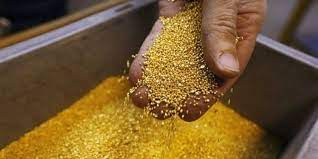
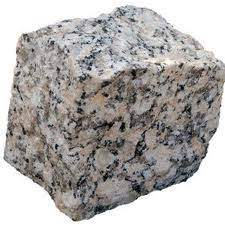

Definición
La minería es una actividad económica que comprende el proceso de extracción, explotación y aprovechamiento de minerales que se hallan en la superficie terrestre con fines comerciales.
La minería es una actividad económica que comprende el proceso de extracción, explotación y aprovechamiento de minerales que se hallan en la superficie terrestre con fines comerciales.
Desarrolla su actividad de explotación en el interior de la tierra a través de túneles, ya sean verticales u horizontales. En las minas, se trabaja desde una chimenea de acceso y se establecen niveles a intervalos regulares, por lo general con una separación de 50 metros o más; así como también, a partir de varios túneles de acceso con diferente altura, o de rampas de acceso que unen diferentes niveles.
Se desarrolla sobre la superficie de la tierra, de manera progresiva por capas o terrazas en terrenos previamente delimitados. Este tipo de minería se aplica en sitios donde los minerales están a poca profundidad.
Comprenden actividades y operaciones mineras realizadas en riberas o cauces de los ríos; también se emplean métodos de minería aluvial para la extracción de minerales y materiales en terrazas aluviales, que constituyen pequeñas plataformas sedimentarias o mesas construidas en un valle fluvial por los propios sedimentos del río.
Es un método de explotación de carbón en fajas delgadas verticales, que son cortadas por medios mecánicos a lo largo de caras o paredes rectas.
Se refiere a cualquier perforación del suelo diseñada con el objetivo de hallar y extraer fluido combustible, ya sea petróleo o hidrocarburos gaseosos, tales como el gas y el petróleo.
Permite obtener materiales situados bajo el océano o ríos, extrayendo los materiales mediante una draga en una barca especialmente preparada para remover el lecho del mar o del río.
La clasificación de los minerales tiene su fundamento en la composición química y en la estructura interna, las cuales en conjunto representan la esencia de un mineral y establecen sus propiedades físicas. Los minerales son elementos o sustancias de lo más diversas que se pueden encontrar en el planeta Tierra, confirmando que nuestro planeta está constituido por ellos. En el Ecuador existe una variada gama de minerales, de los cuales se extrae principalmente los siguientes:
Es un metal precioso blando de color amarillo, se lo clasifica como metal pesado y noble, en el comercio es el más común de los metales preciosos. Alrededor del 75% de la producción mundial del oro se consume en joyería, entre un 10% y 15% se lo emplea en aplicaciones industriales, en especial en electrónica, la diferencia se lo utiliza en la medicina y odontología, en acuñación y reservas de los gobiernos y particulares.
Es un metal lustroso de color blanco-grisáceo, de transición blanco, brillante, blando, dúctil, maleable. En la mayor parte de sus aplicaciones, la plata se alea con uno o más metales y posee las más altas conductividades térmicas y eléctricas de todos los metales, se utiliza en puntos de contacto eléctricos, así como también se la utiliza mucho en joyería y en piezas diversas.
Tierra constituida por agregados de silicatos de aluminio hidratados, de color blanco en estado puro, mezclada con agua forma una materia muy plástica que se endurece al cocinarla. Son de los materiales preferidos para la manufactura de utensilios que sirven en la cocción y el consumo de sus alimentos, fabricación de vasijas de barro para almacenar y añejar el vino, de piezas finas de porcelana, así como pisos de mosaico y embaldosados, entre otros.
Es una roca sedimentaria compuesta mayoritariamente por carbonato de calcio, generalmente calcita, aunque frecuentemente presenta trazas de magnesita y otros carbonatos. Se utiliza en la fabricación de tejas, vidrios, productos de limpieza, esculturas y partes de edificios. En las cuevas, las estalactitas y estalagmitas son depósitos de piedra caliza en formas de témpanos.
El caolín es un silicato de aluminio hidratado, producto de la descomposición de rocas feldespáticas principalmente. Se usa en la
fabricación de porcelanas y preparaciones para almidonar, en la producción de medicamentos y papel, también se utiliza en la fabricación de pinturas de caucho y emulsionadas. Además, se utiliza como agente adsorbente.
Son un grupo de minerales tecto y aluminosilicatos. Se usa en la industria del vidrio y la cerámica, principalmente en lozas para
paredes y techos, sanitarios, porcelanas eléctricas, lustres, pinturas y esmaltes.
El óxido o dióxido de silicio es un compuesto de silicio y oxígeno, es un material muy duro que se encuentra en casi todas las rocas, es un cristal común que se presenta naturalmente. Su uso es común en carreteras, concreto, concreto de alta resistencia, construcciones hidráulicas, losas, pavimentos industriales, pilotes, puentes, puertos, vigas, etc.
Piedra volcánica pumita. Sus componentes se unen durante el enfriamiento del magma de alta viscosidad. La piedra pómez es
utilizada para procesos de filtraje, en polvo para cosméticos, en agricultura y horticultura, puesto que con el uso de esta piedra se puede ahorrar agua en el riego de cosechas y jardines, para la industria de la cerámica, para la limpieza, en la construcción y en el lavado de prendas.
Sedimento dendrítico coloreado por óxidos de hierro. Su uso está asociado a la construcción, a la fabricación de vidrio, fundiciones, pulimentación, filtración, etc.

Comprende el mineral de oro procedente de la mina, que ha sido sujeto a un proceso de chancado, molienda y de flotación. Sometido al piro metalurgia sirve para la recuperación de oro, mercurio y otros minerales.
Es el mineral de cobre procedente de la mina, que ha pasado un proceso de chancado, molienda y de flotación. Se lo somete a la piro metalurgia para la obtención de cobre metálico y se separa de otros minerales como fierro, azufre, sílice y otros minerales.
Son minerales aluminosilicatos microporosos que destacan por su capacidad de hidratarse y deshidratarse reversiblemente. Se
usan en la agricultura como acondicionador y fertilizante de suelos, en la nutrición de animales, acuacultura, catálisis y refinado del petróleo, gasificación del carbón, separación de gases, intercambio iónico y purificación del gas natural.

Es una roca metamórfica compacta, formada a partir de rocas calizas que, sometidas a elevadas temperaturas y presiones,
alcanzan un alto grado de cristalización. Es una piedra de gran calidez con una extensa gama de materiales acorde al cromatismo que ofrece la naturaleza y permiten su aplicación en la construcción de múltiples ambientes y en la decoración actual.
Es una arcilla de grano muy fino del tipo de montmorillonita que contiene más de un tipo de minerales, compuesta esencialmente
por esmectitas. Tiene múltiples usos, entre ellos: fabricación de moldes para fundición, como lodo de perforación, como agente aglutinante en la producción de pelets o paletas del material previamente pulverizado durante las tareas de separación y concentración, al tener la bentonita una gran capacidad tanto de absorción como de adsorción (retención de gases, vapores, etc) se la emplea en decoloración y clarificación de aceites, vinos, sidras, cervezas, etc.
Obra publicada con Licencia Creative Commons Reconocimiento No comercial Compartir igual 4.0